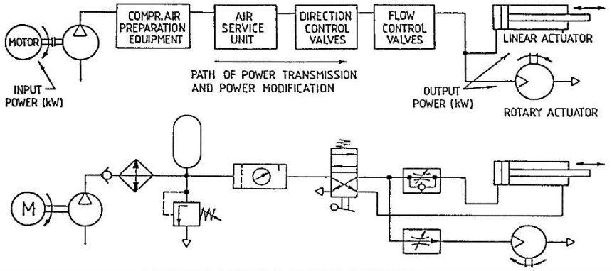
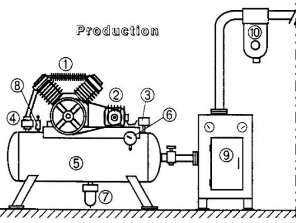
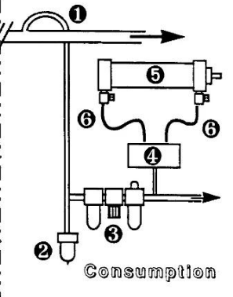

Objektif Pembelajaran
Pada akhir topik ini, pelajar dapat:
- 3.1 Memeriksa tekanan pada sistem pneumatik dan hidraulik.
- 3.2 Mengenal pasti pelbagai jenis tolok tekanan mengikut manual.
- 3.3 Mengaplikasi tolok tekanan untuk memeriksa tekanan mengikut manual operasi.
- 3.4 Merekod bacaan tekanan mengikut ukuran.
- 3.5 Memeriksa kebocoran luaran pada sistem pneumatik dan hidraulik.
- 3.6 Mengenal pasti dan menyetempatkan titik kebocoran luaran mengikut standard.
- 3.7 Menyelesaikan masalah kegagalan pneumatik dan hidraulik mengikut manual operasi.
- 3.8 Menggunakan alat dan instrumen untuk penyelesaian masalah mengikut manual operasi.
- 3.9 Melaksanakan keperluan penyelenggaraan mengikut manual servis.
- 3.10 Mengamalkan penggunaan alat pelindung diri (PPE) mengikut prosedur keselamatan.
3.0 Pengenalan Penyelenggaraan
Penyelenggaraan sistematik diperlukan dalam sistem kawalan pneumatik & hidraulik untuk mempastikan sistem mampu beroperasi dalam jangka masa yang lama dan meningkatkan keupayaan sistem supaya komponen tidak mudah rosak.
Skop Topik 3
Gambarajah Blok Sistem Pneumatik
Gambarajah blok di bawah menunjukkan aliran tenaga dan modifikasi kuasa dalam sistem pneumatik asas.

Rajah 3.1: Gambarajah blok skematik sistem pneumatik — Compressor → Air Preparation → Service Unit → Directional Valve → Flow Control → Actuator
3.1 Sistem Penghasilan Angin (Production)
Bahagian penghasilan angin terdiri daripada komponen-komponen utama yang berfungsi menghasilkan dan menyediakan udara termampat sebelum dihantar ke sistem.

Rajah 3.2: Sistem penghasilan angin (production) — kompressor, tangki, filter, dryer, unit servis
10 Komponen Utama Sistem Penghasilan
3.2 Sistem Penggunaan Angin (Consumption)
Bahagian penggunaan angin pula adalah sistem di mana udara termampat digunakan oleh pengguna akhir untuk melakukan kerja.

Rajah 3.3: Sistem penggunaan angin (consumption) — air take-off, service unit, valve, actuator
6 Komponen Utama Sistem Penggunaan
3.3 Kerosakan-Kerosakan Biasa Semasa Pengujian Litar
Masalah yang sering berlaku semasa pengujian litar pneumatik & hidraulik.
| Bil. | Kerosakan | Kesan |
|---|---|---|
| a | Tidak menyediakan pemampatan angin yang diperlukan | Sistem tidak berfungsi sepenuhnya |
| b | Valve berminyak | Valve tersekat, operasi tidak lancar |
| c | Kebocoran minyak semasa komponen bergerak | Pencemaran, kehilangan tekanan |
| d | Kehausan seal & pergerakan komponen | Silinder & valve tidak berfungsi optimum |
| e | Saluran paip, valve, cylinder berkarat | Kebocoran, penyumbatan |
| f | Mengeluarkan bunyi bising | Pencemaran bunyi |
3.4 Masalah Sistem Pneumatik
3.4.1 Signal Overlapping
Signal Overlapping adalah masalah pada DCV (Directional Control Valve) sistem pneumatik. Ia berlaku apabila isyarat dari kiri dan kanan bertindih, menyebabkan valve tidak dapat beroperasi sepenuhnya.
Penambahan Memory Valve dalam litar pneumatik perlu diletakkan supaya valve dapat beroperasi sepenuhnya tanpa gangguan tekanan dari kiri atau kanan. Memory valve akan memberi isyarat sama ada Normally Open (NO) atau Normally Close (NC) kerana pengasingan aliran udara dilakukan.
3.4.2 Masalah & Kerosakan Komponen
Prestasi sistem pneumatik akan terganggu akibat pelbagai masalah dan kerosakan komponen. Berikut merupakan masalah, kesan, dan cara mengatasinya:
| Bil. | Kerosakan | Kesan | Cara Mengatasi |
|---|---|---|---|
| 1 | Saiz tekanan bekalan angin rendah | a) Kelajuan piston rod berubah-ubah b) Kelajuan daya silinder tidak konsisten |
Laraskan udara pengatur tekanan pada tahap yang dikehendaki. Apabila tombol diputar, gegendang akan menolak pegas ke bawah dan menyebabkan liang injap menjadi lebih besar dan akan meninggikan tekanan udara yang mengalir ke sistem pneumatik. |
| 2 | Pencemaran | a) Mengganggu pergerakan pada bahagian yang bergerak b) Kerosakan komponen pneumatik |
Pasang penapis udara pada talian pneumatik untuk menapis bendasing seperti habuk atau pasir halus. Bendasing akan terperangkap di bawah mangkuk penapis. |
| 3 | Pemeluwapan | a) Komponen seperti valve akan berkarat b) Kelajuan cylinder tersekat-sekat |
Pasang pengering dan penyejuk di antara pemampat dan penerima. Ia bertujuan menyejukkan udara termampat dan pemeluwapan akan dibuang melalui injap salir yang disediakan. |
3.5 Teknik Menguji Kebocoran
Terdapat 6 teknik untuk menguji kebocoran dalam sistem pneumatik & hidraulik:
3.6 Senarai Komponen Yang Memerlukan Penyelenggaraan Sistematik
a) Komponen Pemampat
- Pressure gauge
- Pressure regulator valve
- Compressor oil
- Air leakage
b) Komponen Lain
- Service unit with on-off valve
- Pipe line
- Manifold
- 3/2 way push button normally open / normally close
- Pressure gauge
- One way flow control valve
- Time delay valve (normally close)
- Pressure Sequence valve
- Double-acting cylinder
- 5/2 way double pilot valve
3.7 Jadual Penyelenggaraan Komponen
a) Senarai Komponen & Jenis Semakan
| # | Komponen | Jenis Semakan |
|---|---|---|
| 1 | Pressure gauge (compressor) | Visual |
| 2 | Pressure regulator valve | Visual |
| 3 | Compressor oil | Visual |
| 4 | Air leakage (compressor) | Visual |
| 5 | Service unit with on-off valve | Visual |
| 6 | Pipe line | External leakage |
| 7 | Manifold | External leakage |
| 8 | 3/2 way push button NO/NC | External leakage |
| 9 | Pressure gauge | Visual |
| 10 | One way flow control valve | Visual / External |
| 11 | Time delay valve (NC) | Visual / External |
| 12 | Pressure Sequence valve | Visual |
| 13 | Double-acting cylinder | Visual / External |
b) Kerosakan & Cara Atasi
| Kerosakan | Cara Atasi |
|---|---|
| Meter needle tidak berfungsi | Replace |
| Valve ketat / longgar | Service / Use bubble soap |
| Kebocoran minyak | Service |
| Sambungan longgar | Tight the connection / Use white tape |
| Tersekat (stuck) | Use compression air to service |
| Tiada udara keluar (no air exit) | Service / Replace |
| Skru lock jammed | Replace |
| Tidak berfungsi (not function) | Replace |
| Bising (noisy) | Use bubble soap / Tight connection |
c) Alat & Bahan Penyelenggaraan
Rumusan Topik 3
- Penyelenggaraan sistematik = pastikan sistem beroperasi lama & komponen tidak mudah rosak
- Sistem Penghasilan (Production): 10 komponen utama — Kompressor, Motor, Suis Tekanan, Check Valve, Tangki, Pressure Gauge, Auto Drain, Safety Valve, Air Dryer, Line Filter
- Sistem Penggunaan (Consumption): 6 komponen — Air Take-off, Auto-drain, Air Service Unit, Directional Valve, Actuator, Speed Controllers
- 6 kerosakan biasa: Pemampatan tidak cukup, valve berminyak, kebocoran minyak, seal haus, karat, bising
- Signal Overlapping: Atasi dengan Memory Valve
- 6 teknik uji kebocoran: Mata kasar, penunjuk tekanan, bunyi, buih sabun, pengesan elektronik, kelewatan pergerakan
- Jadual penyelenggaraan: 13 komponen dengan jenis semakan, kerosakan & cara atasi